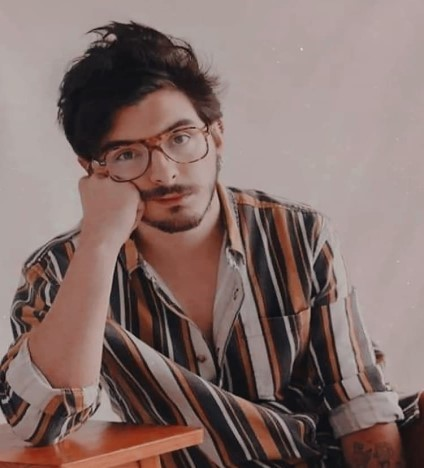

Miembros de la banda
Juan Pablo Villamil Cortés
Nacido en Colombia. Vocalista principal y guitarrista de Morat, también toca piano y ukelele. Estudia Administración de Empresas de la Universidad de los Andes, está estudiando una segunda carrera con énfasis musical y es cofundador de la exitosa casa de producción Mapache.

Juan Pablo Isaza Piñeros
Juan Pablo nació en Colombia. Vocalista principal y guitarrista de Morat, también toca piano y ukelele. Estudia Administración de Empresas de la Universidad de los Andes, está estudiando una segunda carrera con énfasis musical y es cofundador de la exitosa casa de producción Mapache.

Simón Vargas Morales
Simón Vargas nació en Colombia, Bogota. Estudio en el colegio "Gimnasio La Montaña". Actualmente estudia historia y derecho en la "Universidad de los Andés" y al mismo tiempo continua con su trabajo en Morat siendo el bajista del grupo.
Martín Vargas Morales
Nacido en Colombia. Vocalista y batería de Morat, además toca los sintetizadores. Es egresado de Diseño Gráfico de la Universidad de los Andes. Es cofundador de la reconocida marca GNrL studios. Tiene una carrera de Diseño Gráfico.